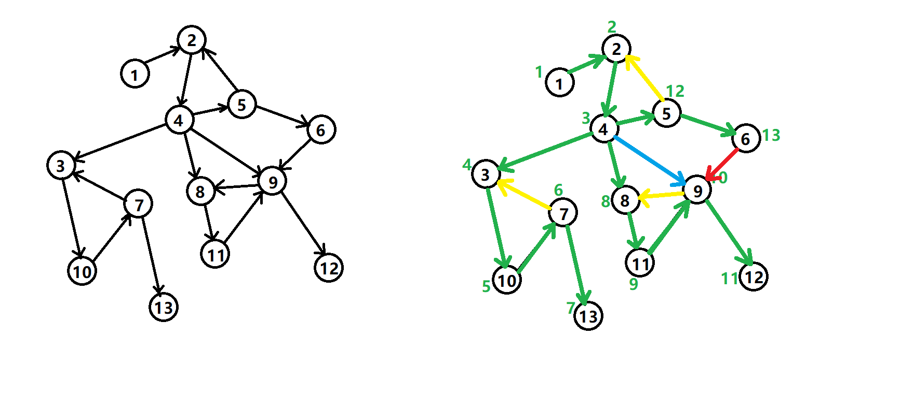
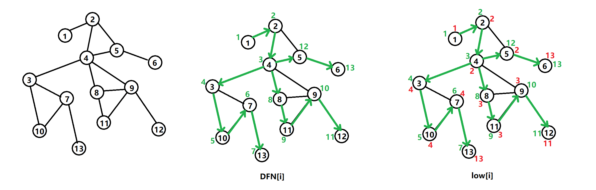
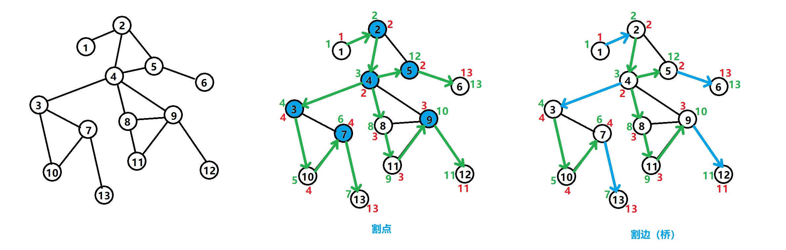
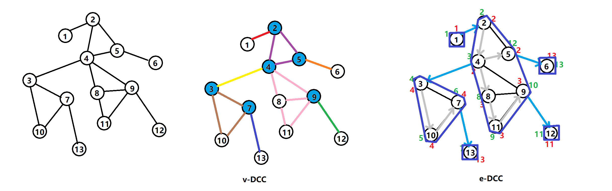

连通分量相关算法
文章目录
有向图 DFS 生成树

有向图的搜索树主要有种边（不一定全部出现）：
- 树边（tree edge）：绿色边，每次搜索找到一个还没有访问过的结点的时候就形成了一条树边。
- 反祖边（back edge）：黄色边，也被叫做回边，即指向祖先结点的边。
- 横叉边（cross edge）：红色边，它主要是在搜索的时候遇到了一个已经访问过的结点，但是这个结点并不是当前结点的祖先时形成的。
- 前向边（forward edge）：蓝色边，它是在搜索的时候遇到子树中的结点的时候形成的。
强连通分量
强连通图：对于有向图，如果对于任意结点，存在一条到的有向简单路径，也存在一条到的有向简单路径，则称是强连通图。
强连通分量：另外，对于有向图点集的一个子集，如果关于的导出子图是强连通图，则称是的强连通分量。
我们考虑 DFS 生成树与强连通分量之间的关系。
如果结点是某个强连通分量在 DFS 树中遇到的第一个结点（这通常被称为这个强连通分量的根），那么这个强连通分量的其余结点一定在 DFS 树中以为根的子树中。
证明：反证法。假设有个结点在该强连通分量中但是不在以为根的子树中，那么到的路径中肯定有一条离开子树的边。但是这样的边只可能是横叉边或者反祖边，然而这两条边都要求指向的结点已经被访问过了，这就和是第一个访问的结点矛盾了。
Tarjan 算法：
TARJAN(int u,int k)
vis[u]=true
low[u]=dfn[u]=k
将 u 圧入栈中
for 与 u 相邻的结点 v
if 结点 v 未被访问过
TARJAN(v,k+1)// 搜索
low[u]=min(low[u],low[v])// 回溯
else if v 在栈中
low[u]=min(low[u],dfn[v])
if low[u] = dfn[u]
则将栈中 u 以及 u 之上的结点全部弹出
这些结点构成一个强连通分量无向图 DFS 生成树

DFS 生成树：即对图进行 DFS 遍历时所有递归到的边组成的树。
设以为根的子树为。
定义为以下结点的 DFN 的最小值（与 Tarjan 有向图中的区分）：
- 中的结点；
- 通过一条不在搜索树上的边能到达的结点。
不难发现，按 DFS 生成树的递归遍历顺序是单调递增的，因此可以在回溯的过程中求出。
无向图的割点与割边
割点：对于无向图中的结点，如果删掉它以及与它相连的边后，整个图连通块数量增加，则结点被称为无向图的割点。
割边：对于无向图中的边，如果删掉它后，整个图连通块数量增加，则被称为无向图的割边，也称作桥。

判定割边
判定割边的条件：
- 是 DFS 树上的边。
- 令是的父结点，则满足。也就是说，从出发，不经过的前提下无法走到更早访问的结点，则作为与图的唯一连接，即为割边。
int dfn[N],low[N],dfn_cnt;
int ans[N],cnt;
void tarjan(int k,int p){ //tarjan 找桥，根结点的父节点为 0
dfn[k]=low[k]=++dfn_cnt;
for(int i=h[k]; i; i=e[i].nex){
int u=e[i].t;
if(!dfn[u]){
tarjan(u,k);
low[k]=min(low[k],low[u]);
if(dfn[k]<low[u])ans[++cnt]=e[i].idx;// 桥
} else if(u!=p) low[k]=min(low[k],dfn[u]);
}
}判定割点
判定割点的条件：
- 若不为根结点，则要求，存在的子结点，满足。 即中的结点最多能走到结点，那么将删除就会导致不连通。
- 若是根结点，则要求存在至少 2 个的子结点，满足。
int dfn[N],low[N],totdfn;
bool cut[N];
int ans[N],la;
void tarjan(int u,int p){
dfn[u]=low[u]=++totdfn;
int cnt=0;
for(int i=h[u];i;i=e[i].nex){
const int v=e[i].t;
if(!dfn[v]){
tarjan(v,u);
low[u]=min(low[u],low[v]);
cnt+=dfn[u]<=low[v];
}else low[u]=min(low[u],dfn[v]);
}
if(cnt-(p==0)>=1)cut[u]=1;
}无向图的双连通分量

边双连通分量
对于无向图，若其子图内不存在割边，则称是的边双连通分量。
对于图，直接删掉所有割边，剩下分量的就是边双连通分量。
将边双连通分量缩点，就得到了的边双树。
点双连通分量
无向图的子图内不存在割点，则称是图的点双连通分量。
对于图，割点可能同时属于多个点双连通分量，但每一条边一定只属于一个点双连通分量。
图中通过边的不同颜色来标记点双连通分量。
求点双连通分量，需在 Tarjan 算法中维护一个栈：
- 当结点被第一次访问时，把该结点入栈。
- 当割点判定条件成立时，无论是否为根：
- 从栈顶不断弹出结点，直到被弹出。
- 刚才弹出的所有结点与结点一起构成一个点双连通分量。
点双连通分量与圆方树有密切联系。
修订记录
- 2022年11月7日 第3次修订
- 2021年1月11日 第2次修订
- 2020年10月3日 创建文章